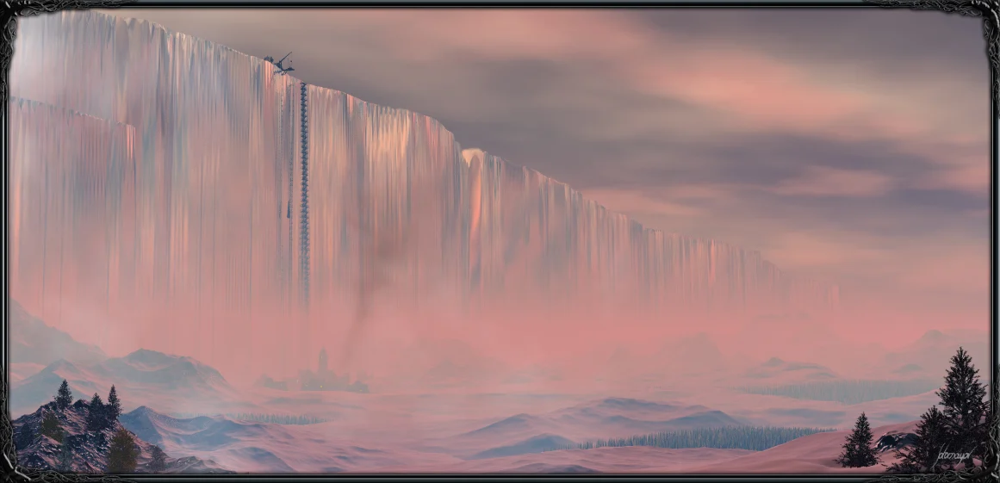
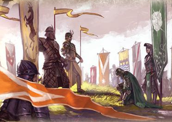
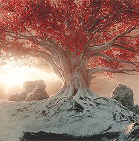

Also known as Prince that was promised and The last hero, a legendary hero from over five thousand years ago, will be reborn again, what the dragons,weild lightbringer, and save teh world from the the Others.
theorized to be Daenerys Targaryen, Aegon Targaryen, or John Snow
A young Cersi Lannister seeks out the witch Maggy the Frog to ask her "When will I wed the prince", referring to Rhaegar Targaryen. Maggy Tells her "Aye. Queen you shall be... until there comes another, younger and more beautiful, to cast you down and take all that you hold dear." Cersi then Asks about having children and Maggy says, "Oh, aye. Six-and-ten for him, and three for you. Gold shall be their crowns and gold their shrouds. And when your tears have drowned you, the valonqar shall wrap his hands about your pale white throat and choke the life from you."
In the Show everything comes true, but in the books she married King Robert, he fathers many bastards, and only 1 of her children has died.
Quiath says two prophecies to Daenerys the first being "To go north, you must go south. To reach the west, you must go east. To go forward you must go back, and to touch the light you must pass beneath the shadow."
This prophecy leads her back to Meereen in A Dance with Dragons Chapter 71
The Next is "Hear me, Daenerys Targaryen. The glass candles are burning. Soon comes the pale mare, and after her the others. Kraken and dark flame, lion and griffin, the sun's son and the mummer's dragon. Trust none of them. Remember the Undying. Beware the perfumed seneschal."
This has not come true yet but relates to people she will face when she reaches westeros
A mysterious dawrf woman tells the Brotherhood without Banners "I dreamt a wolf howling in the rain, but no one heard his grief...I dreamt such a clangor I thought my head might burst, drums and horns and pipes and screams, but the saddest sound was the little bells."
This comes true with the Red Wedding
Shireen Baratheons Jester who survived a shipwreck as is theorized that he was saved by R'hllor. He sings in rhymes that a Prophecies. In theses songs he predicts events such as The Red Wedding,
| Name | Definition | Noteable People | Fact |
|---|---|---|---|
| White Walkers | Zombie like species orginally belived to be extinct | Knight King, "Others" | The reason The Wall was built |
| Greenseers | Ability to have prophetic dreams | Children of the forest, Jojen Reed, Bran Stark | Similar to Dragon Dreams |
| Warg | A person who can enter the mind of an animal and control its actions | Orell, Varamyr, The Stark Children | All the Stark Children can only warg into their Direwolves |
| Red Priests | Worshipers of R'hllor who can see visons in flames, resurrect people, and more | Milesandre, Thoros of Myr, Lord Beric Dondarrion | Lord Beric Dondarrion resurrects Lady Catelyn Stark and she becomes Lady Stoneheart |
| Faceless Men | Assasins that can change their faces | Jaqen H'gar, Arya Stark, The Waif | Mostly located in Braavos but existed in Valyria pre-doom |

| Name | Location | Sigil |
|---|---|---|
| Stark | Winterfell | Wolf |
| Lannisters | Castely Rock | Lion |
| Baratheon | Storms End | Stag |
| Targaryen | Dragonstone | Dragon |
| Martell | Dorne | Red Sun |
| Arryn | The Erie | Falcon |
| Greyjoy | Pyke | Kraken |
| Tyrell | Highgarden | Golden Rose |
| Tully | Riverrun | Trout |

| Name | Location | Noteable fact |
|---|---|---|
| Faith of the Seven | Southern Westeros | Youngest Religion |
| The Old Gods | Northern Westeros, Beyond the Wall | Practiced by Children of the forest, The First Men, and the Starks |
| Drowned God | Iron Islands | Practiced the Ironborn |
| R'hllor | Essos, Westeros | Also known as The Lord of Light |
| Old Gods of Valyria | Valyria | Practiced by the Targaryens |
